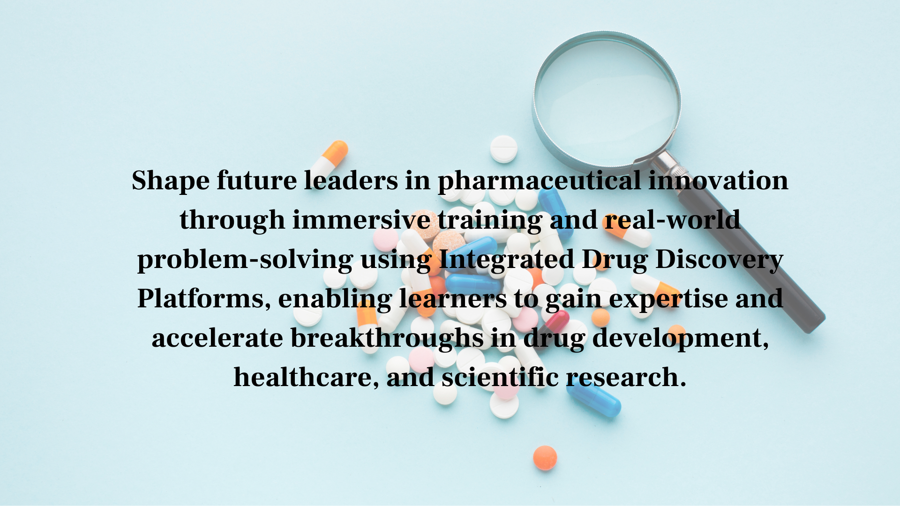
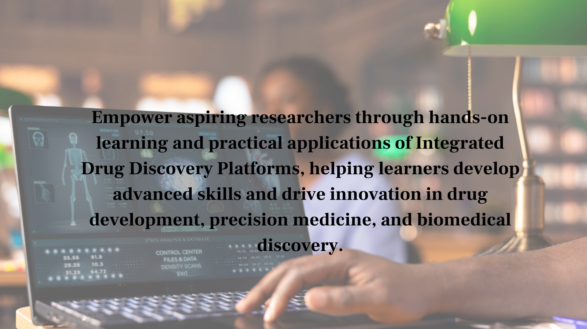

Integrated Drug Discovery Platforms : End-to-End Solutions for Modern Pharma
Drug discovery involves dozens of interconnected computational and experimental workflows spanning target identification, virtual screening, lead optimization, ADMET prediction, and candidate selection. Integrated drug discovery platforms bring these workflows together into unified environments that enable seamless data flow, collaboration, and decision-making across the entire pipeline. Integrated drug discovery platforms eliminate the inefficiencies of using disconnected tools and enable research teams to move faster and make better-informed decisions.
The adoption of integrated drug discovery platforms has accelerated as pharmaceutical companies recognize that fragmented toolsets create data silos, slow workflows, and increase the risk of errors. Integrated drug discovery platforms provide a single source of truth for all drug discovery data and enable AI-driven insights that span the entire pipeline.

Integrated Drug Discovery Platforms : End-to-End Solutions for Modern Pharma
Table of Contents
What Are Integrated Drug Discovery Platforms?
Integrated Drug Discovery Platforms are comprehensive software ecosystems that combine multiple computational and analytical capabilities into a single environment for pharmaceutical research. These platforms integrate target identification tools, virtual screening software, molecular docking platforms, ADMET prediction tools, cheminformatics systems, and bioinformatics software to support every stage of the drug discovery lifecycle. By centralizing workflows, researchers can access data, models, and analytics from one location, reducing complexity and improving scientific productivity.
Unlike standalone applications, Integrated Drug Discovery Platforms provide end-to-end drug discovery software that enables seamless movement between target validation, hit identification, lead optimization, and candidate selection. Modern platforms increasingly incorporate artificial intelligence, machine learning, and cloud-based drug discovery solutions to automate repetitive tasks and generate deeper insights from biological and chemical datasets. This integration helps pharmaceutical organizations accelerate innovation while maintaining data consistency and regulatory compliance.
- Target identification and validation modules
- Virtual screening and molecular docking integration
- ADMET and toxicity prediction within the platform
- Unified data management and visualization
Applications of Integrated Drug Discovery Platforms
Integrated Drug Discovery Platforms are widely used across pharmaceutical companies, biotechnology organizations, academic research institutions, and contract research organizations. Large pharmaceutical companies leverage these platforms to manage complex drug discovery pipelines involving multiple therapeutic targets, compound libraries, and research teams. By connecting computational drug discovery workflows with experimental validation processes, organizations can improve efficiency and reduce development timelines.
The applications of Integrated Drug Discovery Platforms extend beyond traditional pharmaceutical research. They play a crucial role in precision medicine initiatives, biomarker discovery, rare disease research, oncology drug development, and genomics-driven therapeutics. Researchers use AI drug discovery platforms to analyze large biological datasets, identify novel therapeutic targets, and prioritize compounds with the highest probability of clinical success. As healthcare becomes increasingly data-driven, these platforms continue to support innovative approaches to drug development and personalized treatment strategies.
- Large-scale pharmaceutical drug discovery programs
- Academic drug discovery center research
- Contract research organization service delivery
- Biotech startup drug discovery acceleration

Integrated Drug Discovery Platforms : End-to-End Solutions for Modern Pharma
Benefits of Integrated Drug Discovery Platforms
Integrated Drug Discovery Platforms deliver significant advantages by eliminating fragmented workflows and creating a unified environment for data analysis and collaboration. Research teams can access molecular modeling tools, virtual screening software, ADMET prediction systems, and drug discovery informatics resources from a centralized platform. This reduces manual data transfers, minimizes errors, and enables faster decision-making throughout the pharmaceutical R&D process.
Another major benefit is the ability to leverage artificial intelligence and machine learning across the entire discovery pipeline. AI-powered Integrated Drug Discovery Platforms can identify hidden patterns in biological data, predict compound activity, optimize lead molecules, and recommend high-priority experiments. These capabilities improve research productivity, reduce development costs, and increase the likelihood of identifying promising drug candidates. As a result, organizations gain a competitive advantage while accelerating the delivery of innovative therapies to patients.
- Elimination of data silos between disconnected tools
- Automated multi-stage discovery workflows
- Consistent data quality and provenance
- AI insights spanning the entire discovery pipeline
Key Features of Integrated Drug Discovery Platforms
Modern Integrated Drug Discovery Platforms combine diverse technologies into a single framework that supports efficient pharmaceutical research. These solutions provide access to molecular modeling, virtual screening, QSAR analysis, bioinformatics software, ADMET prediction, and drug discovery informatics tools through an integrated interface. By unifying these capabilities, researchers can streamline complex workflows and focus on generating meaningful scientific insights.
Organizations increasingly rely on Integrated Drug Discovery Platforms because they improve collaboration, data accessibility, and operational efficiency. Through advanced analytics, machine learning models, and cloud-based infrastructure, these platforms enable research teams to scale projects more effectively while maintaining data integrity and regulatory compliance. Their flexibility makes them valuable assets for both early-stage research and large-scale pharmaceutical development programs.
- AI-powered target identification
- Molecular docking and virtual screening
- ADMET and toxicity prediction
- Lead optimization workflows
- Bioinformatics and genomics integration
- Cloud-based collaboration tools
- Data visualization and reporting
- Machine learning-driven decision support
Future of Integrated Drug Discovery Platforms
The future of Integrated Drug Discovery Platforms is being shaped by advancements in artificial intelligence, generative AI, cloud computing, and laboratory automation. Emerging platforms are becoming increasingly intelligent, enabling continuous learning from experimental outcomes and real-time integration of biological, chemical, and clinical data. AI-native architectures are expected to transform computational drug discovery by providing predictive recommendations throughout the research process.
Future Integrated Drug Discovery Platforms will also support fully connected research ecosystems that integrate robotic laboratories, electronic laboratory notebooks, multi-omics analytics, and advanced bioinformatics pipelines. These next-generation pharmaceutical R&D software solutions will facilitate global collaboration, improve reproducibility, and enable autonomous experimentation. As machine learning models become more sophisticated, Integrated Drug Discovery Platforms will play an increasingly important role in accelerating drug development, precision medicine, and scientific discovery across the healthcare industry.
- AI-native platform architectures for continuous learning
- Cloud-native deployment for global team collaboration
- Laboratory automation integration for closed-loop discovery
- Autonomous AI-guided drug discovery workflows